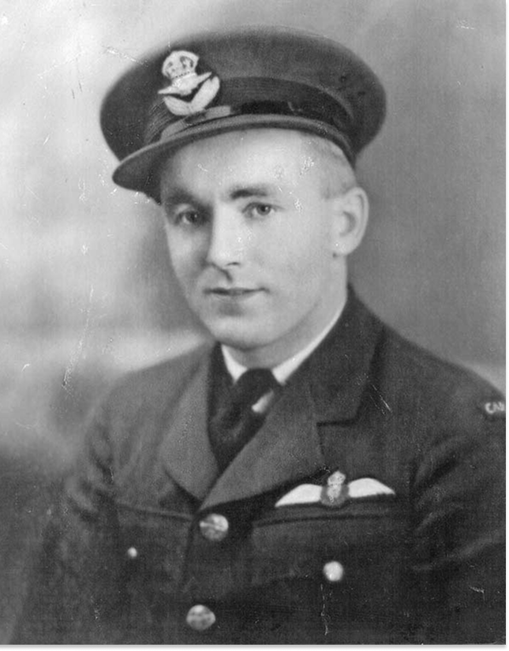

The Battle of Britain Page
THE BATTLE OF BRITAIN
“. . . the Battle of France is over. I expect that the Battle of Britain is about to begin. . . . The whole fury and might of the enemy must very soon be turned on us.
Let us therefore brace ourselves to our duties, and so bear ourselves that if the British Empire and its Commonwealth last for a thousand years, men will still say, ‘This was their finest hour.’ “
Winston Churchill, in the House of Commons, June 18, 1940
JULY
DOSSIER CONTENT
AUGUST
DOSSIER CONTENT
SEPTEMBER
DOSSIER CONTENT
OCTOBER
DOSSIER CONTENT
Cumulative Battle of Britain Losses
(July–October 1940)
RAF FIGHTER COMMAND:
RAF Fighter Command: 544 pilots killed 422 wounded 1,547 aircraft destroyed
Luftwaffe:
2,698 aircrew killed 1,887 aircraft lost Foreign pilots in RAF service: 595 non-British pilots flew in the Battle, including: 145 from Poland 127 from New Zealand
112 from Canada 88 from Czechoslovakia 32 from Australia 28 from Belgium 25 from South Africa 13 from France 10 from Ireland 7 from United States 1 each from Jamaica, Palestine, and Rhodesia
“The gratitude of every home in our Island, in our Empire, and indeed throughout the world, except in the abodes of the guilty, goes out to the British airmen who, undaunted by odds, unwearied in their constant challenge and mortal danger, are turning the tide of world war by their prowess and by their devotion. Never in the field of human conflict was so much owed by so many to so few.”
Prime Minister Churchill in the House of Commons, August 15, 1940
Of the nearly 3000 names on the Battle of Britain monument, 112 are those of Canadians. Among them are five airmen from this region. Many other Canadians had a part in the battle as well including ground crew and nurses.
FLYING OFFICER ROSS SMITHER

Born London, Nov. 12, 1912.
Smither served two years in the militia before joining the RCAF as a fitter. He later qualified as an air gunner before applying to enter a pilot's course. He was serving with No. 1 (RCAF) Squadron when it arrived in the UK on June 21, 1940. Smither claimed a Me109 damaged on August 31st and a Me110 destroyed and another damaged on September 4th. He was shot down and killed by Me109s over Tunbridge Wells on September 15th, in Hurricane P3876. He is buried in Brookwood Military Cemetery.